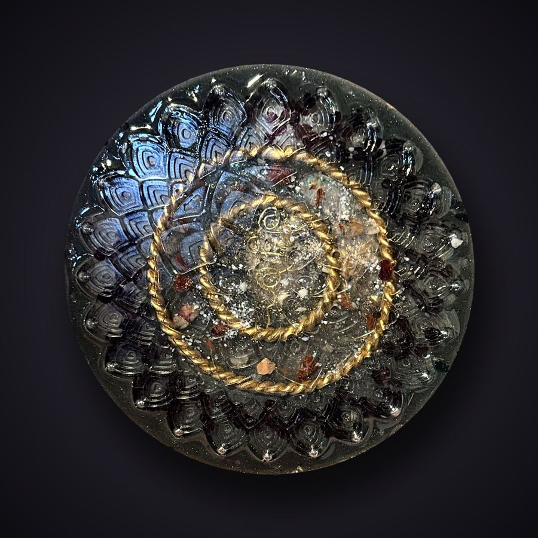
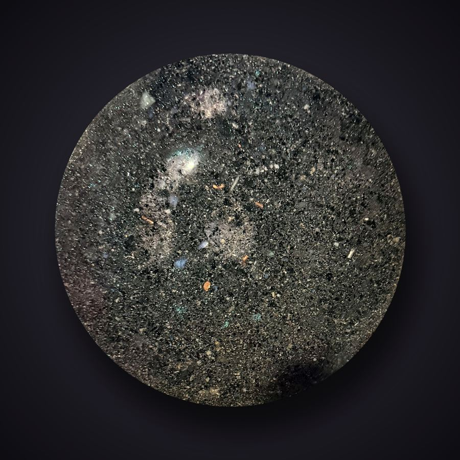

A hand-cast resin mandala charging plate that works two ways: actively, charging the items you place on it and the space it sits in, and passively, simply by being near you. Each layer moves inward in one arc.

Listed in the order it was built, from the outer border to the center, then the top layer.
Petals and rings unfold from a single center, the way all creation unfolds from source. The mandala is the field that holds every intention set upon it.
Science: cast resin in a radial pattern.
The guardians at the gate. Zinc draws the boundary and keeps the field contained. Paired with the copper inside, it holds the polarity of receiving and giving.
Science: a conductive metal. Zinc and copper are the classic pair used in early batteries; sealed in resin, no current flows.
The root. Garnet anchors the whole plate to the earth before any energy moves inward, bringing vitality, life force and commitment.
Science: an iron-aluminum silicate, 6.5–7.5 on the Mohs scale. Its deep red comes from iron.
The heart-space ring, tuned to 528 Hz, the Solfeggio tone of love. It carries a calming, soothing, deeply relaxing energy and is said to raise awareness, bring the left and right hemispheres of the mind into balance, and lead you back to your authentic self. It works with the heart, throat, third-eye (pineal) and crown chakras and the elements of water, fire and aether. The gold finish adds solar, divine-masculine light.
Science: a copper coil 9.4487 inches long, a quarter of a 37.795-inch cubit. Copper is among the best electrical and thermal conductors. "528 Hz" names the ring's tuning, not a measured emission.
The forge. Fire quartz turns raw energy into courage and usable will, the point where grounding becomes transformation.
Science: quartz with hematite inclusions, which are the red-orange flecks.
Cut to the Standard Teotihuacan Unit, the measure of the ancient city in Mexico, as taught in Brian Besco's (Twisted Sage) Harmony work. It weaves past, present and future together and connects you to your ancestral lineage, the elementals, the Central Sun and the core of the Earth. It is said to awaken extrasensory gifts, structure water, strengthen the bond with your Higher Self and clear distortion from the field around the body. It brings balance of mind, body and spirit, and the feeling of being at home on Earth.
Science: a copper coil 5.2135 inches long, an eighth of a 41.7086-inch (105.94 cm) cubit.
The purpose of the piece. Citrine is the stone of manifestation, abundance, confidence and personal power, and is said never to hold on to negativity.
Science: quartz colored yellow by trace iron.
The maker's seal. A sigil in light language that encodes the plate's intention, directive lines set against the receiving circles.
Science: brass is an alloy of copper and zinc, so it joins the border and the rings in one metal.
The universal amplifier, raising everything beneath it.
Science: silicon dioxide. A single quartz crystal is piezoelectric, producing a small charge under pressure, which is why quartz keeps time in watches.
Moon and water. Mother of pearl brings calm, protection and the divine feminine, softening the fire and sun of the layers below.
Science: nacre, made of aragonite plates bound by protein. Its shimmer comes from light interference, not pigment.

Turn the plate over. The dark, speckled back holds a blend gathered from sacred fire, resin, stone and metal.
Fire's memory made earth. The ashes carry the prayers and ceremonies burned into them. Cedar purifies, oak endures, pine renews.
Science: wood ash is the mineral remainder of burning, mostly calcium and potassium compounds.
The sacred smoke of temple and ceremony: prayer, consecration and the lifting of intention.
Science: aromatic tree resins. Frankincense comes from Boswellia trees, myrrh from Commiphora, and copal from several tropical trees.
The shield. It grounds the plate and turns back whatever doesn't belong.
Science: schorl, an iron-rich boron silicate. Tourmaline is piezoelectric and pyroelectric, building a charge under pressure or heat.
Heart-opening tenderness that balances the shield.
Science: elbaite tourmaline, colored pink by manganese.
Ancient carbon, the cleanser and protector.
Science: a carbon-rich rock from Karelia, Russia, about two billion years old.
Earth's fire cooled into a mirror. It cuts through illusion and shows what is true.
Science: silica glass, colored blue by trace metals.
Dragon vitality and courage, the dragon lineage carried into the plate.
Science: green epidote with red piemontite.
The light-bearer, clearing and calming the whole field.
Science: crystalline gypsum. It is soft and slowly dissolves in water, so it is fully sealed in resin here.
Amplifies everything in the blend.
Science: silicon dioxide, the same mineral as the front's top layer.
The conductive web that carries the charge through the blend and spreads it evenly.
Science: all three metals conduct electricity; copper conducts best.
The light-matter layer.
Science: a preparation from the Keshe Foundation, made by treating coated metals in salt water. Its claimed effects have not been tested in published research.
The noble trinity: solar gold, lunar silver and the copper that bridges them.
Science: very fine metal particles suspended in liquid.
The flower faces the world. The fire faces you. The ashes are the part that remembers.
The science notes describe the physical materials. The meanings are traditional and energetic associations, matters of practice rather than scientific or medical claims.